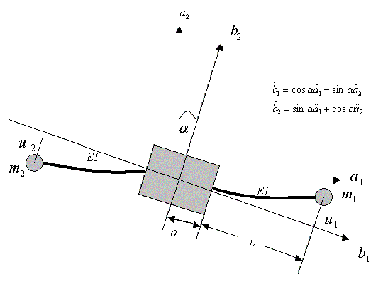

Simulation Control
time step: Time step for the numerical integration routine
time: Duration of the simulation periond in seconds
Description
A flexible spacecraft is modeled as a central rigid body with two massless
beams
attachd symmetrically to the side of the central body. Each beam has a
concentrated mass at the tip. The flexibility comes from the flexural
rigidity EI of
the beams. Although the flexible elements are constrained to move in 1-2
plane
only, the applet is able to simulate the effect of flexibility on the
spacecraft
attitude in three dimensional space.

Inputs
Ixx, Iyy, Izz: Principal moments if inertia
m: Tip mass (kg)
a: Distance as
indicated in the illustration (m)
L: Length of the
beam as illustrated (m)
EI: Flexural rigidity
(N m2)
Initial Condition
u1: Position of the
first mass
u2: Position of the
second mass
psi, theta, phi: Euler angles in a sequence of 3-2-1
u1Dot: Velocity of the first
mass
u2Dot: Velocity of the second
mass
psiDot: Time rate of psi angle
thetaDot : Time rate of theta angle
phiDot: Time rate of phi angle